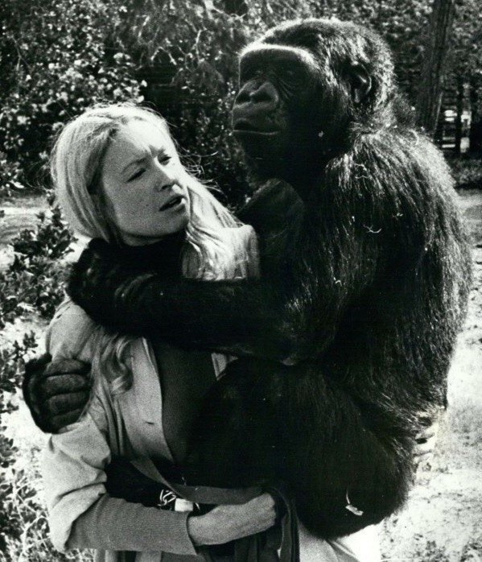

Горилла Коко, родившаяся в 1971 году, с самого детства обучалась учёными Стенфордского университета.
Она знала более тысячи знаков языка жестов и была способна понимать около двух тысяч английских слов, а результаты её iq-тестов соответствуют нормальному уровню взрослого американца.
Коко умела описывать свои чувства, ругаться и шутить. Например, однажды она кокетливо назвала себя «хорошей птичкой», заявляя, что умеет летать, но потом призналась, что это понарошку.
Она умерла утром 19 июня 2018 года во сне в Калифорнии.